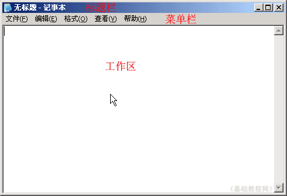
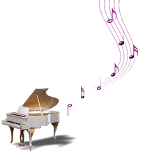

HTML 基础入门教程
十、音画帖 返回
这一课我们来进行音画帖的综合制作，先确定好主题，准备一些相关的素材，下面我们来看一个练习；
1、启动记事本
1）点击“开始－所有程序－附件－记事本”；
2）记事本的窗口主要包括标题栏、菜单栏、工作区，左上角有一个一闪一闪的光标插入点竖线；

3）点菜单“文件－保存”命令，以“音画帖.html”为文件名，类型为“所有文件”，保存文件到自己的文件夹，注意文件名后缀为英文字母；
2、准备素材
1）音画帖大致准备一些背景图片、小图片、音乐、文字等，另外在打开一个记事本存下它们的链接地址；
2）准备一个大的背景图，例如： http://teliute.org/mix/html/sucai/bjtp.jpg
3）准备一些动态gif小图片做修饰，例如：http://teliute.org/mix/html/sucai/xtp.gif
4）准备一首音乐，例如：http://teliute.org/mix/html/sucai/olive.mp3
5）准备一段文字移动用，自己写或摘抄一段；
3、输入内容
1）先把本课的sucai文件夹复制到自己的文件夹中；
2）在工作区中输入下列内容，也可以复制以后进行修改，把图片、音乐地址改成网上的；
<!--整个的表格，宽度设为“500”，这一行是[注释]-->
<table id="t1" bordercolor=pink cellspacing=2 width=500 align=center position: relative; background="sucai/bjtp.jpg" border="6" bgcolor="#4169E1">
<tbody>
<tr>
<td>
<font color=<!--修饰小图片，和标题文字，[注释]-->
<img src="sucai/xtp.gif" width="80" height="50" />
<p> <font style="font-size: 24px;"color="#ff6600" face="楷体_UTF-8">往事如风</font></p>
<!--头像图片居中，[注释]-->
<center><img src="sucai/tx.gif" border=0 /></center><br />
<!--移动文字，速度为1，[注释]-->
<table id="t2" border="0" borderColor="#4169E1" style="width:300px" align="center"><tbody><tr><td>
<marquee scrollamount="1" direction="up" height="200"><p align="left" ><br /><font color="ffffff" face="楷体_UTF-8" style="font-size:20px">
<p>原来真的:网事如风<br />
文/清秋飘絮</p>
<br />
你来了, 又走了;<br/>
我笑了, 又哭了;<br/>
你来得如风,也去得匆匆..<br/>
我笑得陶醉,却也哭得心碎!...<br/>
明明认认真真,小心翼翼;<br/>
明明全心全力,呵护倍至;<br/>
原以为会有个童话般的结果,<br/>
却为何偏偏只留下伤口?<br/>
<br/><br/>
闭上双眼,泪如汩汩泉涌,<br/>
除了可惜,眼泪没有声音,<br/>
而仿佛仅仅只是种温热的液体,<br/>
它再也唤不回已失去的一切 !<br/>
所有一切的一切,<br/>
再也回不去从前,<br/>
也到不了以后了.....<br/>
路人,依然行色匆匆,<br/>
汽车,依然呼啸而过...<br/>
谁会在意 这擦肩而过的心碎?...<br/>
<br/><br/>
默默的街灯 问我为何流泪?<br/>
我无语凝噎,多想诉尽一切!..<br/>
但, 我又怎能说得清,<br/>
多少的梦幻成泡影;<br/>
多少的诺言成谎言;<br/>
多少的甜蜜成苦楚;<br/>
多少的期待成追忆;<br/>
多少的思念成心痛!<br/>
<br/><br/>
当心 痛得不能再痛;<br/>
当泪 流到不能再流;<br/>
当笑 再也掩不住伤悲;<br/>
当醉 再也藏不住脆弱;<br/>
当一切再也难以言说 ;<br/>
当一路迷惘到了尽头;....<br/>
蓦然回首......才发现<br/>
原来真的: 网事如风……<br/></font></center></marquee>
</td></tr></tbody></table>
<!--修饰图片，[注释]-->
<p align=left><img src="sucai/xsh.gif" width="218" height="218"></p>
<!--音乐播放器，自动、循环播放，在一个背景图表格里，[注释]-->
<table id= "m1" style="width: 100%" align="center" position: absolute; bordercolor="#4f3256" background="bj.gif" border="0">
<tbody>
<tr>
<td style="filter: alpha (opacity=50,style=3)">
<p align=center> <embed src="sucai/olive.mp3" width="300" height="45" type="audio/x-pn-realaudio-plugin" loop="-1" autostart="-1" volume="60"></p></td></tr></tbody></table>
<!--版权，[注释]-->
<p>来自：基础教程网</p>
</td></tr></tbody></table>
3）按Ctrl＋S组合键保存一下文件，在自己的文件夹中找到“音画帖”文件，双击打开，看一下页面效果；
|
往事如风 
|
本节学习了制作音画帖的基本方法，如果你成功地完成了练习，请继续学习；
本教程由86团学校TeliuTe制作|著作权所有
基础教程网：http://teliute.org/
美丽的校园……
转载和引用本站内容，请保留作者和本站链接。